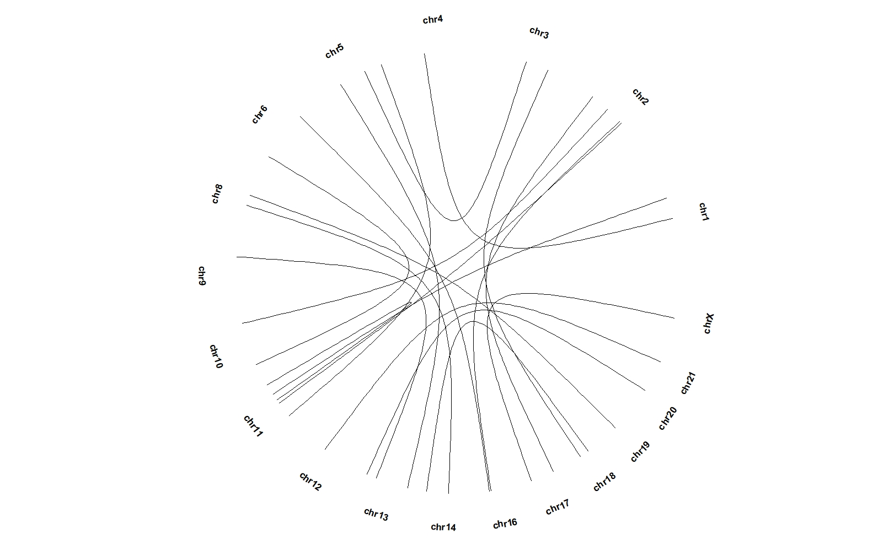

Chapter 5 Geom genomic track layers
There are also some geom layers to visualize genomic data on genome. There have been human(hg38,hg19) and mouse(mm39,mm10,mm9) cytoband data and chromosome length data in ggcirclize package.
Most of the genomic track layers need chr,gstart,gend basic mapping variables. Besides you need supply chrom_data parameters to define the chromosome length.
5.1 Load genome data
First we load hg19 cytoband and chromosome size:
data("hg19_chrom_info")
chrom_hg19 <- hg19_chrom_info$chromsize
# check
head(chrom_hg19,3)
# V1 V2
# 1 chr1 249250621
# 2 chr2 243199373
# 3 chr3 198022430
cytoband_hg19 <- hg19_chrom_info$cytoband
# check
head(cytoband_hg19,3)
# chr start end band stain
# 1 chr1 0 2300000 p36.33 gneg
# 2 chr1 2300000 5400000 p36.32 gpos25
# 3 chr1 5400000 7200000 p36.31 gnegGenerate test data:
5.2 geom_trackgenomicpoint
ggcirclize(bed,aes(end = 360,
chr = chr,gstart = start,gend = end,
value = value1)) +
geom_trackgenomicpoint(chrom_data = chrom_hg19)Mapping with color:
ggcirclize(bed,aes(end = 360,
chr = chr,gstart = start,gend = end,
color = chr,
value = value1)) +
geom_trackgenomicpoint(chrom_data = chrom_hg19)space=fixed can make the size of each sector be same:
5.3 geom_trackgenomicrect
bed = generateRandomBed(nr = 300)
bed <- subset(bed,chr %in% c("chr1","chr2","chr3","chr4"))
bed$ymin <- sample(seq(0,1,0.1),nrow(bed),replace = T)
bed$ymax <- bed$ymin + 0.2
bed$group <- sample(LETTERS[1:4],nrow(bed),replace = T)
# check
head(bed)
# chr start end value1 ymin ymax group
# 1 chr1 114048 7101411 -0.2895206 0.1 0.3 D
# 2 chr1 8732752 11662832 -1.0575720 0.5 0.7 A
# 3 chr1 13705322 16977193 0.5415639 0.2 0.4 A
# 4 chr1 21827870 26896494 -0.7159598 0.8 1.0 B
# 5 chr1 28397265 30759921 -0.1669718 1.0 1.2 A
# 6 chr1 36176151 52241396 0.2176396 0.4 0.6 B
ggcirclize(bed,
aes(end = 360,
chr = chr,gstart = start,gend = end)) +
geom_trackgenomicrect(aes(ymin = ymin,ymax = ymax),
chrom_data = chrom_hg19)ggcirclize(bed,
aes(end = 360,
chr = chr,gstart = start,gend = end)) +
geom_trackgenomicrect(aes(ymin = ymin,ymax = ymax,fill = group),
chrom_data = chrom_hg19)Add chromosome cytoband:
bed = generateRandomBed(nr = 300)
ggcirclize(mapping = aes(start = 0,end = 360)) +
geom_trackgenomicrect(data = cytoband_hg19,
aes(r0 = 0.9,r1 = 0.95,
chr = chr,gstart = start,gend = end,
fill = stain),
color = NA,chrom_data = chrom_hg19) +
scale_fill_manual(values = c("gneg" = "white","gpos25" = "grey75","gpos50" = "grey50",
"gpos100" = "black","gvar" = "black","acen" = "red",
"stalk" = "blue")) +
geom_trackgenomicpoint(data = bed,
aes(r0 = 0.5,r1 = 0.9,clock.wise = F,
chr = chr,gstart = start,gend = end,
value = value1,color = chr),
add.xaxis = F,strip.label = F,
chrom_data = chrom_hg19)5.4 geom_trackgenomictile
bed = generateRandomBed(nr = 100, nc = 4)
# check
head(bed,3)
# chr start end value1 value2 value3 value4
# 1 chr1 4833203 25608564 0.4822349 0.2058859 0.01484909 -0.5005523
# 2 chr1 48610396 76802798 0.7022751 0.4851126 -1.38951435 0.6165077
# 3 chr1 79055730 87730120 -0.3187775 0.4399068 0.51394522 0.2435110
bed_long <- bedMatTolong(bed)
head(bed_long,3)
# chr start end x variable value y
# 1 chr1 4833203 25608564 1 value1 0.4822349 1
# 2 chr1 48610396 76802798 2 value1 0.7022751 1
# 3 chr1 79055730 87730120 3 value1 -0.3187775 1ggcirclize(bed_long,aes(end = 360,r0 = 0.5,r1 = 0.8,
chr = chr,gstart = start,gend = end)) +
geom_trackgenomictile(aes(x = x,y = y,fill = value),
chrom_data = chrom_hg19,strip.label = T) +
scale_fill_gradient2(low = "green",mid = "white",high = "red",midpoint = 0)add_link can draw connection with the origin chromosome region:
ggcirclize(bed_long,aes(end = 360,r0 = 0.5,r1 = 0.7,
chr = chr,gstart = start,gend = end)) +
geom_trackgenomictile(aes(x = x,y = y,fill = value),
chrom_data = chrom_hg19,strip.label = T,
add_link = T,
link_pos = "top") +
scale_fill_gradient2(low = "green",mid = "white",high = "red",midpoint = 0)Change link line color:
ggcirclize(bed_long,aes(end = 360,r0 = 0.5,r1 = 0.7,
chr = chr,gstart = start,gend = end)) +
geom_trackgenomictile(aes(x = x,y = y,fill = value),
chrom_data = chrom_hg19,strip.label = T,
add_link = T,
link_pos = "bottom",
link_col = circlize::rand_color(24)) +
scale_fill_gradient2(low = "green",mid = "white",high = "red",midpoint = 0)Add cytoband plot:
library(ggnewscale)
ggcirclize(bed_long,aes(end = 360,r0 = 0.4,r1 = 0.68,
chr = chr,gstart = start,gend = end)) +
geom_trackgenomictile(aes(x = x,y = y,fill = value),
chrom_data = chrom_hg19,strip.label = F,
add_link = T,
link_pos = "top",
link_col = circlize::rand_color(24)) +
scale_fill_gradient2(low = "green",mid = "white",high = "red",midpoint = 0) +
# ============================================================================
new_scale_fill() +
geom_trackgenomicrect(data = cytoband_hg19,
aes(r0 = 0.8,r1 = 0.85,fill = stain),
color = NA,chrom_data = chrom_hg19) +
scale_fill_manual(values = c("gneg" = "white","gpos25" = "grey75","gpos50" = "grey50",
"gpos100" = "black","gvar" = "black","acen" = "red",
"stalk" = "blue"))Change the position:
ggcirclize(bed_long,aes(end = 360,r0 = 0.6,r1 = 0.9,
chr = chr,gstart = start,gend = end)) +
geom_trackgenomictile(aes(x = x,y = y,fill = value),
chrom_data = chrom_hg19,strip.label = T,
add_link = T,
link_pos = "bottom",
link_col = circlize::rand_color(24)) +
scale_fill_gradient2(low = "green",mid = "white",high = "red",midpoint = 0) +
# ============================================================================
new_scale_fill() +
geom_trackgenomicrect(data = cytoband_hg19,
strip.label = F,
add.xaxis = F,
# xAxis.params = list(pos = "bottom"),
aes(r0 = 0.43,r1 = 0.48,fill = stain),
color = NA,chrom_data = chrom_hg19) +
scale_fill_manual(values = c("gneg" = "white","gpos25" = "grey75","gpos50" = "grey50",
"gpos100" = "black","gvar" = "black","acen" = "red",
"stalk" = "blue"))5.5 geom_trackgenomicarea
bed = generateRandomBed(nr = 300)
ggcirclize(bed,aes(end = 360,fill = chr,
chr = chr,gstart = start,gend = end,
value = value1)) +
geom_trackgenomicarea(chrom_data = chrom_hg19)
5.7 geom_trackgenomicdensity
load(system.file(package = "circlize", "extdata", "DMR.RData"))
ggcirclize(DMR_hyper,aes(end = 360,
chr = chr,gstart = start,gend = end)) +
geom_trackgenomicdensity(chrom_data = chrom_hg19)ggcirclize(DMR_hyper,aes(end = 360,
chr = chr,gstart = start,gend = end)) +
geom_trackgenomicdensity(chrom_data = chrom_hg19,fill = "pink",color = NA)Draw partial chromosomes:
ggcirclize(DMR_hyper %>% filter(chr %in% c(paste0("chr",1:6),"chr20","chrX")),
aes(end = 360,
chr = chr,gstart = start,gend = end)) +
geom_trackgenomicdensity(chrom_data = chrom_hg19,fill = "pink",color = NA)Keep all chromosomes:
5.8 geom_trackgenomicrainfall
load(system.file(package = "circlize", "extdata", "DMR.RData"))
cb <- rbind(DMR_hyper,DMR_hypo)
cb$group <- c(rep("DMR_hyper",nrow(DMR_hyper)),
rep("DMR_hypo",nrow(DMR_hypo)))
ggcirclize(cb,
aes(end = 360,color = group,
chr = chr,gstart = start,gend = end)) +
geom_trackgenomicrainfall(chrom_data = chrom_hg19,size = 1) +
scale_color_manual(values = c(DMR_hyper = "red",DMR_hypo = "blue"))
5.9 geom_trackgenomiclink
geom_trackgenomiclink need chr0, gstart0, gend0, chr1, gstart1 and gend1 mapping variables.
set.seed(123)
bed1 = generateRandomBed(nr = 100)
bed1 = bed1[sample(nrow(bed1), 20), ]
bed2 = generateRandomBed(nr = 100)
bed2 = bed2[sample(nrow(bed2), 20), ]
bed_link <- cbind(bed1[,1:3],bed2[,1:3])
colnames(bed_link) <- c("chr1","start1","end1","chr2","start2","end2")
bed_link$value <- rnorm(nrow(bed_link))
bed_link$group <- sample(LETTERS[1:6],nrow(bed_link),replace = T)
bed_c <- rbind(bed1,bed2)
# check
head(bed_link,3)
# chr1 start1 end1 chr2 start2 end2 value group
# 41 chr6 102324459 147617643 chr16 59796357 69153026 -0.2506477 A
# 89 chr17 65167455 77619820 chrX 46532875 81569809 1.5202752 B
# 63 chr11 13366995 32331617 chr5 172937687 180577320 -2.0932565 BPlot:
ggcirclize(bed_link,aes(end = 360,
chr0 = chr1,gstart0 = start1,
chr1 = chr2,gstart1 = start2)) +
geom_trackgenomiclink(aes(r = 1),chrom_data = chrom_hg19)ggcirclize(bed_link,aes(end = 360,
chr0 = chr1,gend0 = end1,
chr1 = chr2,gend1 = end2)) +
geom_trackgenomiclink(aes(r = 1),chrom_data = chrom_hg19)
Add arrows:
ggcirclize(bed_link,aes(end = 360,color = group,fill = group,
chr0 = chr1,gstart0 = start1,
chr1 = chr2,gstart1 = start2)) +
geom_trackgenomiclink(aes(r = 1),chrom_data = chrom_hg19,
curve.arrow = arrow(type = "closed",end = "both"))ggcirclize(bed_link,aes(end = 360,
chr0 = chr1,gstart0 = start1,gend0 = end1,
chr1 = chr2,gstart1 = start2,gend1 = end2)) +
geom_trackgenomiclink(aes(r = 1),chrom_data = chrom_hg19)Mapping with color:
ggcirclize(bed_link,aes(end = 360,
chr0 = chr1,gstart0 = start1,gend0 = end1,
chr1 = chr2,gstart1 = start2,gend1 = end2)) +
geom_trackgenomiclink(aes(r = 1,fill = group),
chrom_data = chrom_hg19,
keep.all.chrom = T)ggcirclize(bed_link,aes(end = 360,
chr0 = chr1,gstart0 = start1,gend0 = end1,
chr1 = chr2,gstart1 = start2,gend1 = end2)) +
geom_trackgenomiclink(aes(r = 1,fill = value),
chrom_data = chrom_hg19,
keep.all.chrom = T,
start.arrow = T,end.arrow = T)ggcirclize(bed_link,aes(end = 360,
chr0 = chr1,gstart0 = start1,gend0 = end1,
chr1 = chr2,gstart1 = start2,gend1 = end2)) +
geom_trackgenomiclink(aes(r = 1),fill = "grey90",
chrom_data = chrom_hg19,
keep.all.chrom = T,
start.arrow = T,end.arrow = T,
linetype = "dashed",linewidth = 1.5)Combine multiple layers:
ggcirclize(bed_link,aes(end = 360)) +
geom_trackgenomiclink(aes(chr0 = chr1,gstart0 = start1,gend0 = end1,
chr1 = chr2,gstart1 = start2,gend1 = end2,
r = 0.5),
strip.label = F,
keep.all.chrom = T,
chrom_data = chrom_hg19) +
geom_trackgenomicrect(data = bed_c,
aes(start = 0,r0 = 0.55,r1 = 0.75,
chr = chr, gstart = start, gend = end),
fill = "orange",strip.label = F,add.xaxis = F,
keep.all.chrom = T,
chrom_data = chrom_hg19) +
geom_trackgenomicpoint(data = bed_c,
aes(start = 0,r0 = 0.75,r1 = 0.95,
chr = chr, gstart = start, gend = end,value = value1),
keep.all.chrom = T,
chrom_data = chrom_hg19)5.10 geom_trackgenomiclabel
set.seed(111)
bed = generateRandomBed(nr = 50, fun = function(k) sample(letters, k, replace = TRUE))
bed$label <- sample(paste0("gene ",1:55),55,replace = F)
ggcirclize(bed,aes(end = 360,r0 = 0.7,r1 = 0.7,
chr = chr,gstart = start,gend = end,
label = label)) +
geom_trackgenomiclabel(chrom_data = chrom_hg19)
Change the connection position:
ggcirclize(bed,aes(end = 360,r0 = 0.7,r1 = 0.7,
chr = chr,gstart = start,gend = end,
label = label)) +
geom_trackgenomiclabel(chrom_data = chrom_hg19,
link_pos = "bottom",
strip.label.pos = "bottom")Change connection color:
5.11 geom_trackgenomiclabel2
geom_trackgenomiclabel2 will use enough space to adjust the labels rather than put them into each sector.
set.seed(111)
bed = generateRandomBed(nr = 50, fun = function(k) sample(letters, k, replace = TRUE))
bed$label <- sample(paste0("gene ",1:55),55,replace = F)
ggcirclize(bed,aes(end = 360,
chr = chr,gstart = start,gend = end,
label = label)) +
geom_trackgenomiclabel2(aes(r0 = 0.7,r1 = 0.7),chrom_data = chrom_hg19)ggcirclize(bed,aes(end = 360,
chr = chr,gstart = start,gend = end,
label = label)) +
geom_trackgenomiclabel2(aes(r0 = 0.7,r1 = 0.7),chrom_data = chrom_hg19,
link_pos = "bottom",
strip.label.pos = "bottom")ggcirclize(bed,aes(end = 360,
chr = chr,gstart = start,gend = end,
label = label,color = chr)) +
geom_trackgenomiclabel2(aes(r0 = 0.7,r1 = 0.7),
chrom_data = chrom_hg19)